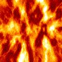
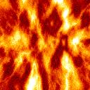
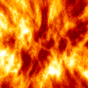
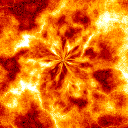
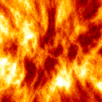
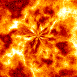

 



Aidar Alimbayev

I am an electronics engineer with experience in programming and teaching. Currently I am working as Machine Learning Engineer at Nazarbayev University advised by Amin Zollanvari. I am generally interested in Machine Learning and Data Science
I am grateful to be supported by the “RESEARCH INTERNSHIP IN WORLD LABORATORIES” COMPETITION of The Shakhmardan Yessenov Science and Education Foundation.
I received my undergraduate degree from the S.Seifullin University with a B.S. in Radioengineering, Electronics and Telecomminications. I also received my MSc degree in State University of Telecomminication named after M.A. Bonch-Bruevich in Saint-Petersburg, Russia.
I enjoy rowing, running and matrial arts. Email: aidar.alimbayev [at] nu [dot] edu [dot] kz